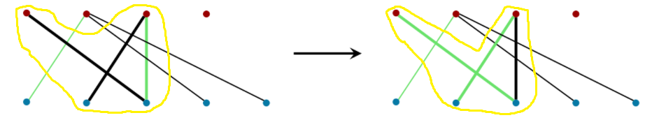

Алгоритм Куна служит для того, чтобы найти наибольшее паросочетание в двудольном графе.
Дан двудольный граф G, содержащий n вершин и m рёбер. Требуется найти наибольшее паросочетание, т.е. выбрать как можно больше рёбер, чтобы ни одно выбранное ребро не имело общей вершины ни с каким другим выбранным ребром.
Красные вершины из одной доли графа, синие из дргуой. Все ребра в двудольном графе соединяют вершины из разных долей.
Закрыть окноЗелёные рёбра образуют паросочетание (пустое множество рёбер тоже образует паросочетание)
Закрыть окноЗелёные ребра образуют максимальное паросочетание, его размер равен трём. Заметим, что это не единственный вариант максимального паросочетания.
Закрыть окноЗдесь мы видим два зелёных ребра из паросочетания. Нас интересуют те чередующиеся цепи, оба конца которых свободны. На картинке чередующаяся цепь, так как сначала идёт чёрное ребро, потом зелёное, затем снова чёрное. Важно, что оба конца чёрных рёбер(первая красная вершина, вторая синяя) не покрыты паросочетанием. Такая цепь является дополняющей.
Закрыть окноВажно, чтобы длина дополняющей цепи была нечётная. В нашем случае длина равна трём.
 Закрыть окно